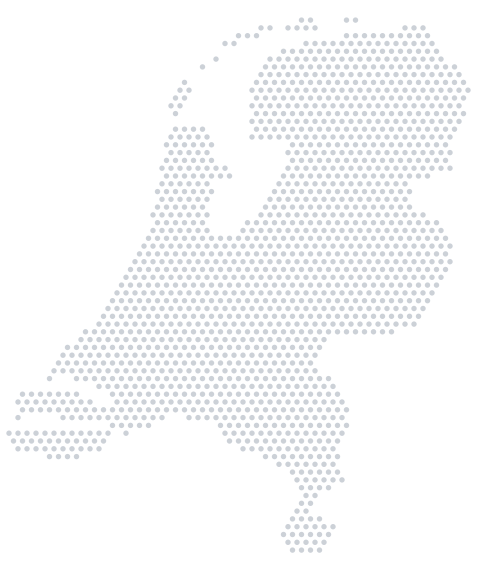

Academic consultancy · By students, for students
Study in the Netherlands, with those who've done it.
We are students and graduates of Dutch universities. We guide you through the whole process of studying in the Netherlands: choosing a degree and university, applying through Studielink, writing your motivation letter, DUO student finance and finding a place to live.
- 8
- university cities
- 24 h
- to reply to your enquiry
- €0
- for your first consultation

Next deadline
15 January 2027
Studielink deadline for numerus fixus degrees (limited places)
- University of Amsterdam
- TU Delft
- Erasmus University Rotterdam
- Leiden University
- Utrecht University
- University of Groningen
- Maastricht University
- Vrije Universiteit Amsterdam
- Amsterdam University of Applied Sciences
- The Hague University of Applied Sciences
01 Why the Netherlands
A top European university, with regulated tuition fees.
The Netherlands combines internationally renowned universities, teaching in English and public tuition fees for European students. These are the reasons that matter most when deciding.

-
Regulated tuition fees
EU students at a public university pay the same statutory fee as Dutch students: €2,694 per year in 2026-27.
-
Degrees taught in English
Hundreds of programmes are taught entirely in English, from Psychology and Economics to Engineering. You don't need to speak Dutch to start.
-
Two paths: WO and HBO
Research universities (WO) and universities of applied sciences (HBO) award official degrees recognised across Europe. We help you choose the path that suits you.
-
Student life
Student associations, introduction week, cycling everywhere and a huge international community. Living costs are usually between €900 and €1,200 a month, depending on the city.

About us
We made the same journey. Now we'll guide you through yours.
We are students and graduates of Dutch universities. We know the doubts, the deadlines and the hunt for a room because we lived them, and we guide you so you don't have to figure it all out alone.
By students, for students.
Amsterdam, Oudezijds Voorburgwal · Photo: Jorge Láscar, CC BY 2.0
02 Services
From your first question to your first day of class.
One adviser follows your case from start to finish: they know where you are, what's missing and which deadline comes next.
Book your free consultation-
01
Profile assessment
We review your grades, your English level and your goals to tell you honestly what your options are, with no false expectations.
-
02
Choosing a degree and university
We compare programmes, cities and types of university, and agree with you on a realistic shortlist that fits your profile and budget.
-
03
Motivation letter and CV
In many applications the letter carries the most weight. We help you find your story and write a letter that is genuinely yours, with revisions until it's ready.
-
04
Studielink application
We handle Studielink registration, documents and every deadline with you, including the selection procedures for numerus fixus degrees.
-
05
Grants and benefits
We explain DUO student finance, zorgtoeslag and huurtoeslag, help you apply, and look for scholarships that match your profile.
-
06
Housing and arrival
Finding a room in the Netherlands is hard. We give you a strategy and real support, and guide you through the first formalities: BSN, bank account and health insurance.
03 How we work
A clear process, in four steps.
-
Free consultation
A first call to get to know your profile, answer your questions and see whether we can help.
-
Tailored plan
Your university shortlist and a personal calendar with every deadline and document.
-
Application
Motivation letter, Studielink, documents and, where needed, selection procedures.
-
Arrival
Funding, housing and first formalities, so you start the year with everything sorted.
Timeline for starting in September 2027
General Studielink dates for bachelor's degrees. Each programme may set its own deadlines, so we check them with you one by one.
-
Studielink opens for applications to the 2027-28 academic year.
-
Last day for numerus fixus degrees. You can apply to a maximum of two per year.
Next deadline -
Usual deadline for all other degrees if you're an EU student.
Next deadline -
The academic year begins. Introduction week is usually the week before.
04 Fees & funding
What it costs to study in the Netherlands, and the support that offsets it.
As a European student you pay the statutory tuition fee and, if you meet the requirements, you can receive the same public support as a Dutch student. These are the 2026 amounts.
Tuition fee
€2,694/ year
Statutory fee (wettelijk collegegeld) for EU students in 2026-27.
DUO basic grant
about€325/ month
If you don't live with your parents. It becomes a gift if you graduate within 10 years.
DUO supplementary grant
up to€491/ month
Depending on your parents' income, on the same terms as the basic grant.
Zorgtoeslag
up to€129/ month
Monthly allowance towards Dutch health insurance, which is mandatory if you work there.
Key requirement for EU students: to receive DUO student finance you need to work in the Netherlands for an average of at least 32 hours a month. Huurtoeslag (rent benefit) is only available for self-contained housing. In your first consultation we work out what applies to you.
Check your case2026 amounts published by DUO and the Dutch Tax and Customs Administration (Dienst Toeslagen). They are indicative: the final amount depends on your situation.
05 Where to study
The leading universities in the Netherlands, city by city.

- AmsterdamUniversity of Amsterdam, Vrije Universiteit and Amsterdam University of Applied SciencesWO · HBO
- RotterdamErasmus University Rotterdam, Rotterdam University of Applied Sciences and InhollandWO · HBO
- DelftTU Delft, the country's leading technical universityWO
- LeidenLeiden University, the oldest in the NetherlandsWO
- The HagueThe Hague University of Applied SciencesHBO
- UtrechtUtrecht University and HU University of Applied SciencesWO · HBO
- GroningenUniversity of Groningen and Hanze University of Applied SciencesWO · HBO
- MaastrichtMaastricht University and its problem-based learningWO
WO · Research university
Academic, research-oriented education. A bachelor's degree usually takes 3 years.
HBO · Applied sciences
Practical, career-focused education with work placements. A bachelor's degree usually takes 4 years.
06 Experiences
In the words of students who are already there.
The constant follow-up made all the difference. Every deadline and every document was under control weeks before the due date. I never felt alone in the process.
They helped me find my own voice in my motivation letter instead of giving me a generic template.
I arrived thinking about one city and ended up choosing another that suited me much better. Their advice was honest: they don't sell you what you don't need.
07 Guides
Guides to prepare your application.
- Application How to write a motivation letter that works Structure, mistakes that cost you a place and the process we recommend.
- Costs How much it costs to study in the Netherlands in 2026 Tuition, rent, health insurance and funding, with real numbers.
- Deadlines Application timeline for September 2027 Every key Studielink date, from 1 October to your first day of class.
08 FAQ
Frequently asked questions
Can't find yours? Message us on WhatsApp and we'll get back to you.
When should I start the process of studying in the Netherlands?
Ideally 9 to 12 months before the course starts. Numerus fixus degrees close on 15 January and most others on 1 May, for a September start.
How much does it cost to study in the Netherlands?
The statutory tuition fee for EU students is €2,694 in 2026-27. On top of that come living costs, usually between €900 and €1,200 a month depending on the city, which DUO student finance and zorgtoeslag can reduce. See the full breakdown in our cost guide.
Can I study in the Netherlands in English?
Yes. Hundreds of bachelor's and master's programmes are taught entirely in English. You will usually need to prove your level with a certificate such as IELTS or TOEFL; we tell you what each programme requires.
What is a numerus fixus degree?
A degree with a limited number of places and its own selection procedure. You apply through Studielink before 15 January, and you can apply to a maximum of two per year.
Does your advice cost anything?
The first consultation is free and is used to assess your profile. Afterwards we explain exactly what each plan includes before you decide anything.
Do you work with all Dutch universities?
We cover the main research universities and universities of applied sciences, with programmes in English and Dutch, in the country's major university cities.
Do you also help with accommodation?
Yes. We advise you on platforms, strategy, deadlines and budget for each city. The Dutch rental market is very competitive, so it pays to arrive prepared.
Are you an official university body?
No. Studex Consulting is an independent consultancy run by students and graduates. We are not officially affiliated with any Dutch university.
09 Contact
Tell us about your situation.
The first consultation is free and comes with no commitment. We reply within 24 hours.
Request your free consultation
The more you tell us, the more useful our first call will be.